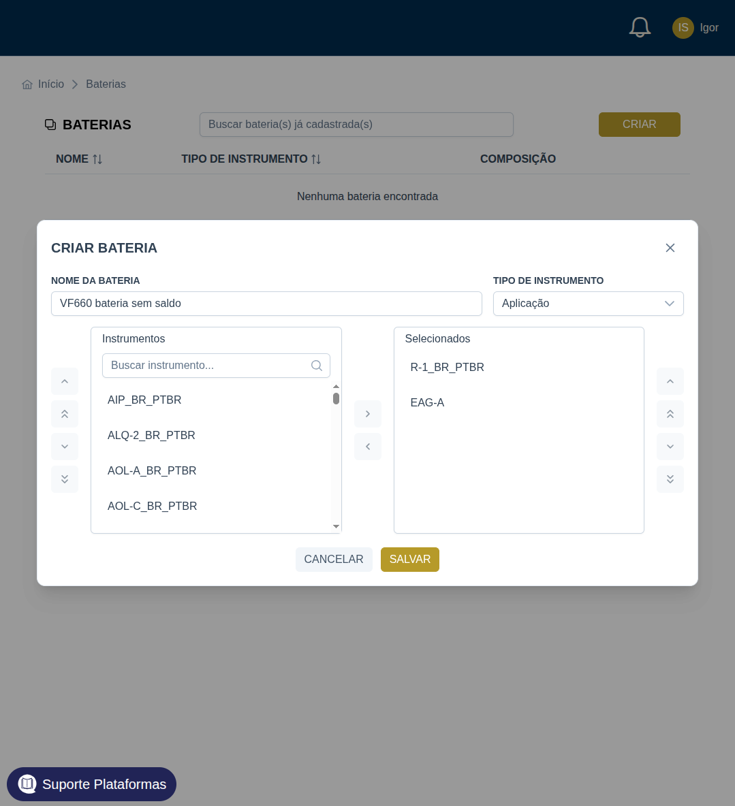
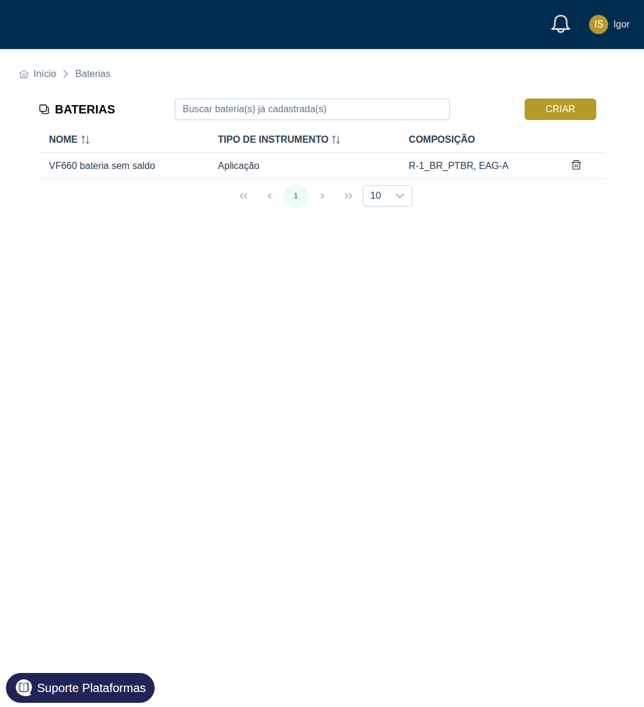
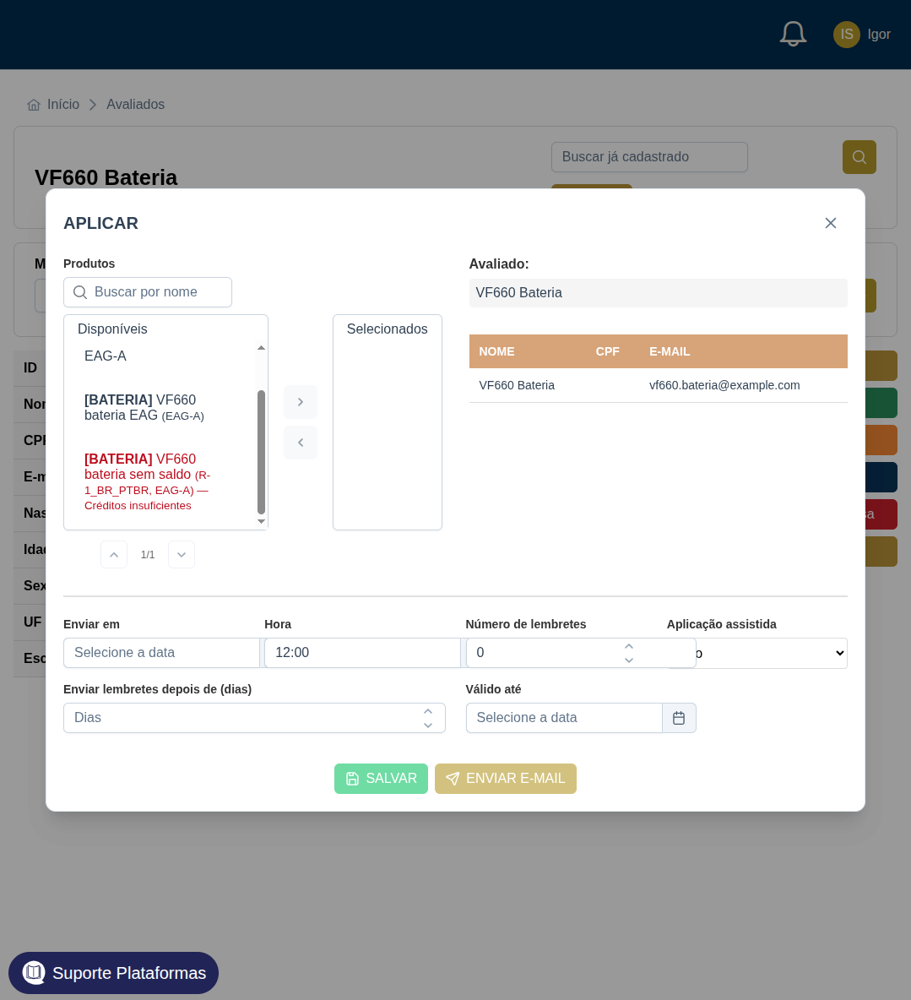
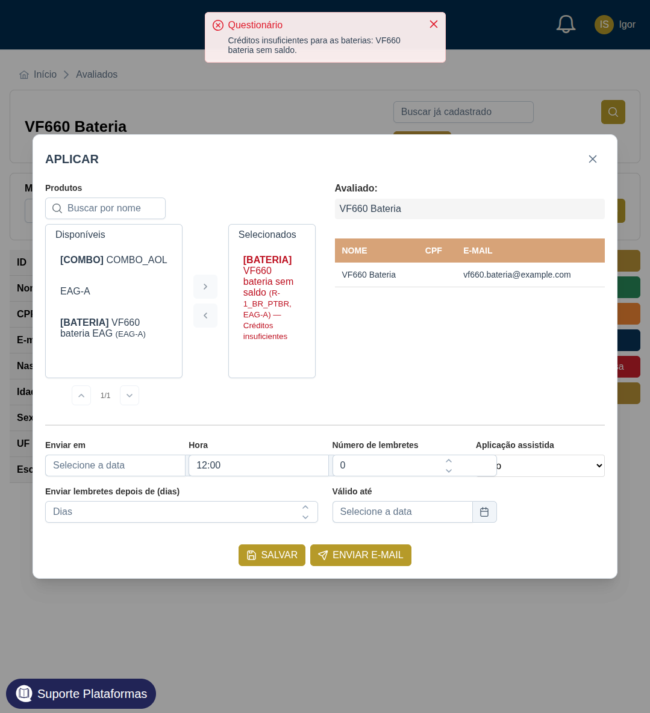
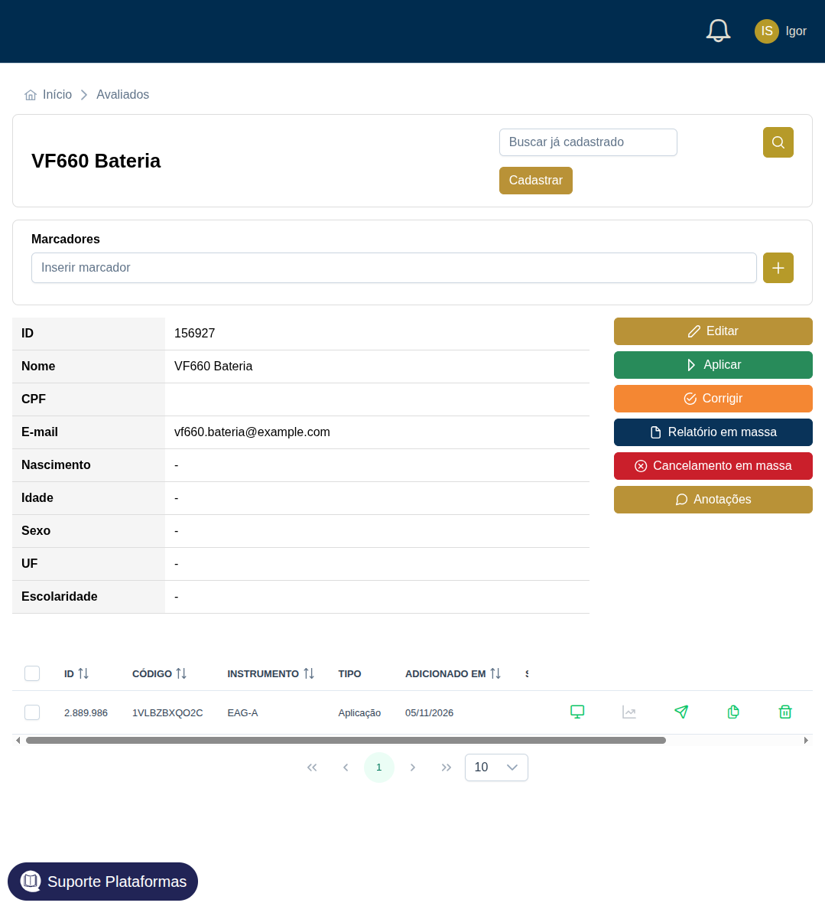
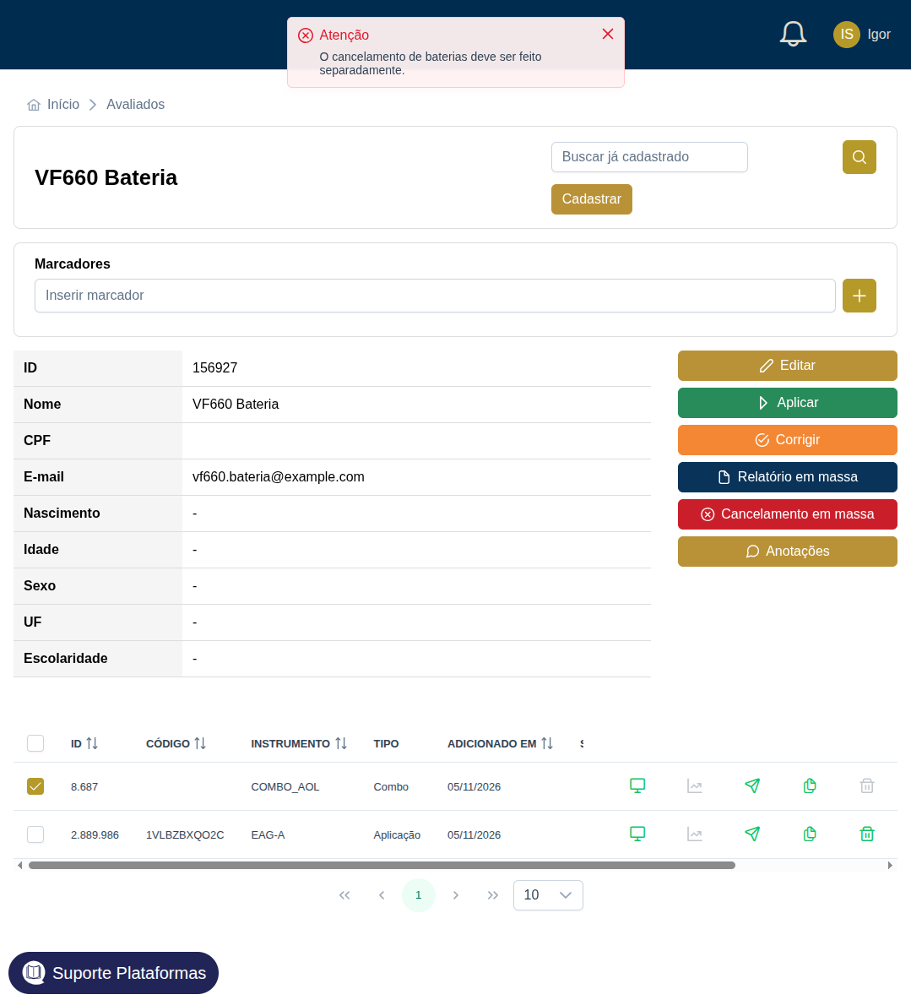

Igor entrou como psicólogo, departamento 471. O avaliado desta rodada é VF660 Bateria, id 156927, criado na hora. O departamento já tinha 4 aplicações de EAG-A e nenhuma de R-1. Também não tinha COMBO_AOL. Para o aplicar existir, o banco local recebeu 1 licença de aplicação do combo, compra id 58.
1. Criar a bateria não gasta licença

Nome "VF660 bateria sem saldo", tipo Aplicação, itens R-1 e EAG-A.

A bateria ficou na lista: Aplicação, composição R-1_BR_PTBR e EAG-A. No banco é a bateria 8, do psyuser 904. A última movimentação de crédito continuou a 58. Criar a bateria não debitou nada. A segunda, "VF660 bateria EAG", só com EAG-A, é a bateria 9, e também não debitou.
2. Na aplicação, a bateria aparece pelo nome e pelos itens

No avaliado novo, em Aplicar, a bateria só de EAG-A aparece como "[BATERIA] VF660 bateria EAG (EAG-A)". A de R-1 e EAG-A aparece em vermelho: "[BATERIA] VF660 bateria sem saldo (R-1_BR_PTBR, EAG-A) — Créditos insuficientes". As duas ficam na lista. A sem saldo não some.

Salvar a bateria sem saldo responde "Créditos insuficientes para as baterias: VF660 bateria sem saldo." Não nasceu questionário e não nasceu movimentação. O R-1 de aplicação do departamento segue em zero, então a bateria inteira fica de fora.
3. Aplicar a bateria gasta 1 de cada item

A bateria só de EAG-A entrou. O avaliado ficou com o questionário 2889986, EAG-A, aplicação, pendente, sem combo. O banco gravou o uso id 59: 1 aplicação do teste 732, saindo do departamento 471. O EAG-A foi de 4 para 3. O R-1 não entrou nessa conta.
4. Cancelar um item do combo não devolve licença individual
O COMBO_AOL saiu pela mesma tela de Aplicar. Os três itens nasceram juntos, projeto 8687, todos pendentes: AOL-A (2889987), AOL-C (2889988) e AOL-D (2889989). O consumo foi um só, uso id 60, 1 aplicação do combo 24. Não houve uso separado de AOL-A, AOL-C ou AOL-D.

O combo 8687 está marcado e a lixeira dele está desligada. O texto da lixeira é "Cancelamento disponível apenas para questionários individuais pendentes". A lixeira do EAG-A, que não é combo, continua ligada. Cancelamento em massa do combo responde "O cancelamento de baterias deve ser feito separadamente." Pedir o cancelamento do AOL-A direto no mesmo endpoint responde 400, com a mesma frase. Os três questionários continuam ativos, status 20. Não entrou estorno, nem licença individual de AOL-A, AOL-C ou AOL-D.
A licença do combo continua consumida. Cancelar um item do combo, que no legado devolveria 1 licença daquele instrumento, aqui não acontece.
5. O webhook de cancelamento do Platform Manager também não estorna
O AOL-D desse combo, questionário 2889989, código _Gdiz1gnXUkX3-YDBfQVM5wIVdFZ5lAXyuUM_IjvbnU, foi aberto várias vezes e o assessment já o tinha cancelado. O Platform Manager avisa o backend com POST /webhook, evento QUESTIONNAIRE_STATUS, mensagem QUESTIONNAIRE_CANCELED e a tag QUESTIONNAIRE_CANCELED.
Esse POST foi feito no mesmo endpoint. A resposta foi 200. O questionário continuou ativo, status 20, dentro do projeto 8687. O uso id 60, 1 licença do COMBO_AOL, ficou como estava. Não entrou estorno e não entrou licença individual de AOL-D. O handler de status não trata cancelamento: a mensagem desconhecida fica no log e o saldo não muda. No servidor o caminho é o mesmo.